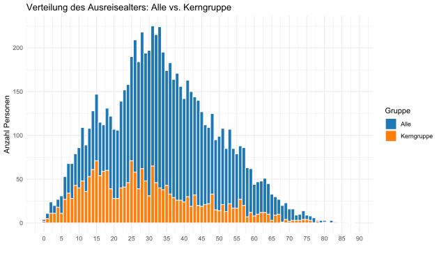
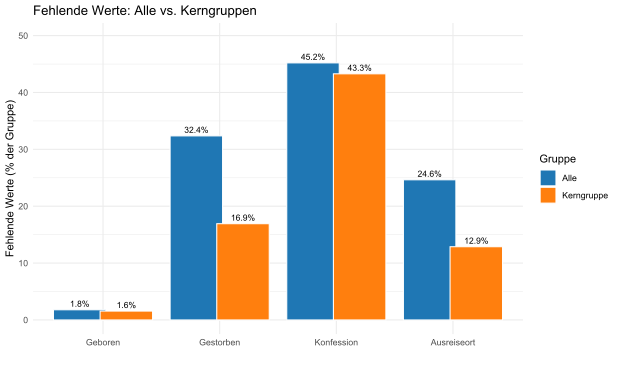
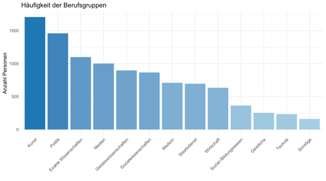
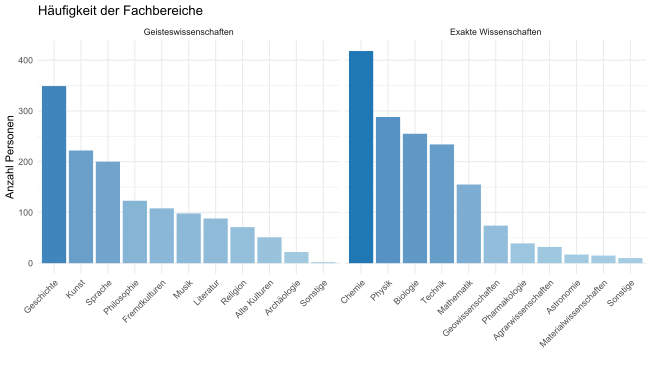
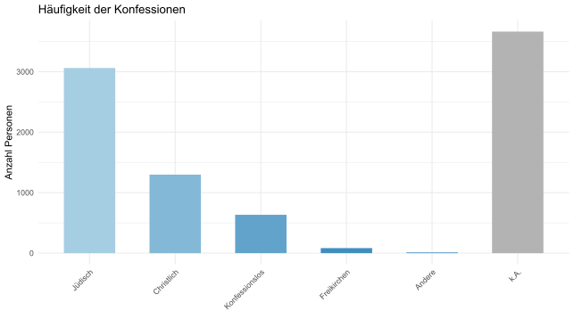

Datenbankhandbuch
Das Datenbankhandbuch umfasst mehrere kompakte Beiträge, die detaillierte Informationen zur Datenbank, zu den enthaltenen Daten, deren Besonderheiten sowie zur Nutzung der Filter bereitstellen. Die Beiträge sind so konzipiert, dass sie flexibel genutzt werden können: Sie können nacheinander gelesen, einzeln ausgewählt oder in beliebiger Reihenfolge aufgerufen werden. Auf diese Weise ermöglicht das Handbuch sowohl ein systematisches Kennenlernen der Datenbank als auch ein schnelles Nachschlagen spezifischer Informationen.
Zurück zum InhaltsverzeichnisDatenbank
Die Datenbank ist tabellarisch aufgebaut und wird den Nutzern vollständig
als Tabelle mit allen Einträgen bereitgestellt.
Jede Zeile enthält biographische oder emigrationsbezogene Angaben zu Personen,
die infolge der nationalsozialistischen Machtübernahme und der Ausweitung
des „Dritten Reichs“ aus den deutschsprachigen Ländern emigrierten.
Diese Angaben sind in den entsprechenden Spalten Name, Beruf, Geboren,
Gestorben, Konfession, Ausreiseort und Emigrationsweg gespeichert.
Durch einen Klick auf den jeweiligen Namen können kurze Emigrationsbiografien
der Personen geöffnet werden.
Die Datenbank wird fortlaufend erweitert und umfasst derzeit
Angaben zu 8094 Personen. Mehr Informationen zum Ursprung der
enthaltenen Daten finden Sie im Abschnitt
Datengrundlage.
Für eine effiziente Recherche in den komplexen
Emigrationsdaten stehen verschiedene Such- und Filtermöglichkeiten zur
Verfügung. Oberhalb der Tabelle befindet sich ein Filterpanel mit
zentralen Suchoptionen. Zusätzlich können direkt in den Spaltenköpfen
Spaltenfilter verwendet werden, um gezielt nach bestimmten
Angaben zu suchen. Über die Pfeile neben den Spaltennamen
lassen sich die Einträge in einigen Spalten zudem sortieren.
Weitere Details hierzu finden Sie in Abschnitten
Datenfilterung und
Sortierung.
Datengrundlage
Die Datengrundlage der Personendatenbank bilden die Einträge aus
dem Biographischen Handbuch der deutschsprachigen Emigration nach 1933.
Diese wurden von der ehemaligen Studentin Stephanie Bujak
(M.A. Digital Humanities) aus der Online-Version des Handbuchs
mithilfe von Python-Skripten extrahiert und für die weitere
Verarbeitung aufbereitet.
Das Handbuch, erstmals 1980/83 von Werner Röder
und Herbert Strauss herausgegeben, enthält Einträge zu Personen aus den
Bereichen Politik, Kunst, Wirtschaft, Wissenschaft,
öffentlichem Leben und Literatur, die im Zuge der Machtübernahme
der Nationalsozialisten und der Ausweitung des „Dritten Reichs“ die
deutschsprachigen Länder verließen. Die Herausgeber beschreiben diese
Personen als „mehr oder weniger prominent“, betonen jedoch zugleich,
dass für die Aufnahme in das Lexikon nicht in erster Linie Leistungen
oder gesellschaftliche Stellung ausschlaggebend waren. Vielmehr spielte
eine „gemeinsame historische Betroffenheit“, nämlich die erzwungene
Auswanderung, eine zentrale Rolle. Daher finden sich im
Handbuch neben weltbekannten Persönlichkeiten wie Albert Einstein
oder Erich Maria Remarque auch zahlreiche Personen,
die sowohl damals als auch heute einer breiteren Öffentlichkeit
kaum bekannt waren bzw. sind.
Das Lexikon entstand im Rahmen einer Kooperation zweier Institutionen.
Das Institut für Zeitgeschichte in München erstellte die
deutschsprachigen Einträge zu Personen aus Politik,
Wirtschaft und öffentlichem Leben. Die Research Foundation for Jewish Immigration
in New York bearbeitete
hingegen die Einträge zu Personen aus Kunst, Literatur und Wissenschaft,
die in englischer Sprache verfasst wurden.
Im Rahmen der Seminare zur Emigration und zum Exil
von Wissenschaftlern und Ingenieuren, organisiert von
Prof. Dr. Klaus Hentschel von der Abteilung
Geschichte der Naturwissenschaft und Technik,
werden die
bestehenden Einträge um neue Informationen ergänzt
und zusätzliche Einträge aufgenommen.
Diese neuen Einträge werden ausschließlich auf Deutsch verfasst.
Umgang mit heterogenen Daten
Die Einträge in der Datenbank entstanden in unterschiedlichen
Institutionen und wurden sowohl auf Englisch als auch auf
Deutsch verfasst (mehr dazu im Abschnitt
Datengrundlage).
Neben den sprachlichen Unterschieden enthalten die Einträge
nicht einheitliche Bezeichnungen, Abkürzungen und Akronyme,
viele Einträge weisen zudem einen sehr unterschiedlichen
Detailierungsgrad auf. Diese Heterogenität erschwert
einerseits die systematische Auswertung,
Vergleichbarkeit und strukturierte Filterung der Daten.
Andererseits ermöglicht sie eine differenzierte,
kontextbezogene Beschreibung der Personen,
sofern entsprechende Informationen vorlagen.
Um die Authentizität der Daten zu bewahren
und Informationsverluste durch Vereinheitlichung
zu vermeiden, wurden die personenbezogenen
Angaben weitgehend unverändert übernommen.
Lediglich geographische Angaben in den
emigrationsbezogenen Daten wurden
ins Deutsche übersetzt und behutsam standardisiert,
um die Durchsuchbarkeit der Datenbank zu verbessern.
Um die gezielte Analyse der nicht standardisierten
Daten dennoch zu ermöglichen, wurden zahlreiche
Filterfunktionen implementiert. Weitere Informationen
hierzu finden Sie im Abschnitt Datenfilterung.
Mehr über die Besonderheiten der Daten erfahren
Sie im Abschnitt Datenbeschreibung.
Datenbeschreibung
Die Personendatenbank ist tabellarisch aufgebaut
und umfasst acht Spalten. Da die Einträge
meist nicht standardisiert sind, weist jede
Spalte besondere Strukturen und Eigenheiten auf,
deren Kenntnis die effiziente Nutzung der Datenbank erleichtert.
Name: enthält neben den eigentlichen Namen oft Pseudonyme,
Titel oder ursprüngliche Namen. Beim Anklicken
auf den Namen erscheint eine kurze Emigrationsbiografie
der Person. Die Namen der in die Datenbank neu eingefügten
Personen sind kursiv markiert.
Beruf: die Spalte enthält eine
oder mehrere Berufsbezeichnungen pro Person,
manchmal auch akademischer Titel in Deutsch
und Englisch. Die Angaben variieren stark
in der Detaillierung, z. B. „Arzt“ vs. „Zahnchirurg“
oder „physician“ vs. „neurologist“.
Geboren: die Spalte enthält Geburtsdatum und -ort,
teils auf Deutsch, teils auf Englisch. Angaben
zu Land oder Region sind häufig abgekürzt wie
z. B. „Ger.“, „Aus.“, „Pol.“ oder fehlen.
Gestorben: die Spalte enthält Sterbedatum
und -ort, teils auf Deutsch, teils auf Englisch.
In einzelnen Fällen wird zudem die Todesursache
angegeben, etwa bei ungewöhnlichen
Umständen wie Hinrichtung oder Unfall.
Die Spalte weist viele fehlende Werte auf, da viele
Emigranten zum Zeitpunkt der Verfassung der Einträge
(mehr dazu im Abschnitt
Datengrundlage)
noch lebten. Die Spalte wird laufend ergänzt,
jedoch in der Regel nur um Sterbejahre.
Ergänzte Jahre sind kursiv markiert.
Konfession: die Spalte enthält eine oder
mehrere Konfessionen pro Person, teils
mit Zusatzinformationen zu Konfessionswechseln
oder familiärem Hintergrund. Viele Werte in der Spalte fehlen.
Mehr über fehlende Werte in Datenbank erfahren Sie
hier.
Ausreiseort: Die Spalte gibt an,
wo sich die Person unmittelbar
vor der ersten Emigration nach der Machtübernahme
der Nationalsozialisten aufhielt.
Personen, die zu diesem Zeitpunkt dauerhaft
im Ausland lebten, sind ebenfalls erfasst,
sodass die Spalte nicht ausschließlich deutschsprachige Länder umfasst.
Die Angaben wurden standardisiert und liegen einheitlich
in deutscher Sprache vor. In der Spalte wird entweder
das Ausreiseland oder, sofern bekannt, die Stadt
bzw. Region zusammen mit dem Land angegeben.
Weitere Informationen zur Standardisierung
der geografischen Namen in der Datenbank finden Sie
hier.
Emigrationsweg: Diese Spalte enthält
standardisierte Informationen zu Ausreisejahren,
Ausreiseländern und ggf. Städten. Bei manchen
Personen ist nur eine einzelne Emigration
vermerkt, häufig erfolgten jedoch mehrere Stationen.
Der Emigrationsweg umfasst dabei auch Remigrationen,
sofern diese bis zum Ende der 1970er stattfanden.
Emigrationsbiografie: Wird nicht direkt angezeigt,
kann jedoch per Klick auf den Namen aufgerufen
werden. Aus technischen Gründen sind die
Biographien teilweise nicht vollständig aus
der Datengrundlage (mehr zu Datengrundlage
hier) übernommen,
enthalten jedoch häufig zusätzliche weiterführende Informationen.
Kerngruppe
Die Datenbank enthält Informationen zu Vertretern
unterschiedlicher Berufsgruppen
(mehr dazu im Abschnitt
Kategorisierung der Berufsgruppen).
Als Kerngruppe werden die Vertreter der Berufsgruppen Geisteswissenschaften
und Exakten Wissenschaften (einschließlich Ingenieure und Techniker)
bezeichnet. Diese Gruppe wird bei der
Datenpflege priorisiert behandelt:
fehlende Angaben werden vorrangig ergänzt,
und neue Einträge werden zuerst hier aufgenommen.
Momentan sind in der Kerngruppe 2174
Personen vorhanden.
Möchte ein Nutzer ausschließlich diese Gruppe erkunden,
kann er dies über den entsprechenden Button
im Filterpanel auswählen. In diesem Modus steht zusätzliche
Filtermöglichkeit zur Verfügung, gezielt nach
Fachbereichen innerhalb der Berufsgruppen zu filtern.
Zeitbezug der Berufsangaben
Die Datenbank enthält unter anderem Angaben
zu den Berufen der Personen, in manchen
Fällen auch zu akademischen Titeln.
Diese Angaben beziehen sich jedoch
nicht auf den Zeitpunkt der Emigration,
sondern auf den gesamten Lebens- und
Berufsweg der Personen. Viele der erfassten
Personen emigrierten bereits als Kinder oder Jugendliche
und absolvierten ihre Ausbildung oder ihr Studium erst im Ausland.
Das untenstehende Diagramm zeigt die Verteilung
des Ausreisealters sowohl für alle in der Datenbank
enthaltenen Personen als auch für die Kerngruppe
(mehr über Kerngruppe
hier).
Wenn beispielsweise nur erwachsene Emigrantinnen
und Emigranten betrachtet werden sollen,
empfiehlt es sich, die Daten entsprechend zu filtern.
Dies kann etwa durch eine Einschränkung der Geburtsjahre erfolgen.

Zurück zum InhaltsverzeichnisFehlende Werte
Einige Spalten der tabellarischen Datenbank enthalten viele fehlende Werte. Das Diagramm unten zeigt deren Anteil für die gesamte Datenbank und für die Kerngruppe (mehr zu Kerngruppe hier).

Die prozentualen Werte beziehen sich jeweils auf die Gruppengröße. Gezeigt werden nur Spalten, bei denen die absolute Anzahl fehlender Werte über hundert liegt. Spalte Gestorben enthält viele fehlende Werte, da viele Emigrantinnen und Emigranten zum Zeitpunkt der Eintragserstellung noch lebten. Sie wird laufend aktualisiert, besonders in der Kerngruppe. Viele fehlende Werte in der Spalte Ausreiseort ergeben sich daraus, dass die ursprünglichen Daten (mehr dazu im Abschnitt Datengrundlage) diese Angaben oft nicht enthielten und erst ermittelt werden mussten. Auch diese Spalte wird fortlaufend ergänzt.Die fehlenden Werte in der Spalte Konfession sind vermutlich darauf zurückzuführen, dass viele Emigrantinnen und Emigranten aus dem „Dritten Reich“ ihre Konfession nicht unbedingt preisgeben wollten. Diese Spalte wurde noch nicht ergänzt.
Fehlende Werte sind in der Datenbank mit „k.A.“ gekennzeichnet und können damit über den Spaltenfilter (mehr über Spaltenfilter hier) gefunden werden. Zurück zum Inhaltsverzeichnis
Kategorisierung der Berufsgruppen
Für bessere Durchsuchbarkeit der Daten wurden die Personen in dreizehn Berufsgruppen eingeteilt. Einige Personen wurden mehreren Gruppen zugeordnet, wenn ihre Berufe unterschiedlich waren oder mehreren Kategorien zugeordnet werden können. So erscheinen Ingenieure sowohl in Berufsgruppe Technik als auch in Berufsgruppe Exakte Wissenschaften, Kunsthändler sowohl in Wirtschaft als auch in Kunst. Im Folgenden werden Berufsgruppen aufgelistet. Beim Klick auf die jeweilige Berufsgruppe werden nähere Informationen zur Zuordnung der Berufe angezeigt.

Zurück zum InhaltsverzeichnisKategorisierung der Fachbereiche
Für eine differenzierte Darstellung
der Kerngruppe (mehr dazu
hier)
wurden die Berufsgruppen Geisteswissenschaften
und Exakte Wissenschaften in einzelne Fachbereiche
unterteilt. Personen konnten dabei mehreren
Bereichen zugeordnet werden.
So sind etwa Kunsthistoriker
sowohl im Bereich Geschichte
als auch Kunst, Musikwissenschaftler
in Kunst und Musik und Biochemiker
in Chemie und Biologie vertreten.
Im Folgenden werden Fachbereiche
aufgelistet.
Beim Klick auf den jeweiligen
Bereich werden nähere Informationen zur Zuordnung
der Personen angezeigt.

Zurück zum InhaltsverzeichnisKategorisierung der Konfessionen
Um eine effiziente Suche nach Vertretern bestimmter Konfessionen zu ermöglichen, wurden die Personen in verschiedene Konfessionsgruppen eingeteilt. Dabei können Personen mehreren Gruppen zugeordnet sein. So sind Vertreter von Freikirchen sowohl der Gruppe Freikirchen als auch der Gruppe Christlich zugeordnet. Auch Personen, die im Laufe ihres Lebens konvertiert sind, wurden entsprechend mehreren Konfessionsgruppen zugewiesen. Im Folgenden werden Konfessionsgruppen aufgelistet. Beim Klick auf die jeweilige Konfession werden nähere Informationen zur Zuordnung der Personen angezeigt.

Zurück zum InhaltsverzeichnisGeographische Namen
Die ursprünglich uneinheitlichen emigrationsbezogenen
geografischen Angaben in den Spalten Ausreiseort
und Emigrationsweg wurden
standardisiert, um die Durchsuchbarkeit
der Datenbank zu verbessern. Die Städtenamen wurden
auf die historischen deutschen Bezeichnungen vereinheitlicht
(z. B. Pressburg statt Bratislava, Breslau statt Wrocław).
Veränderungen der staatlichen Zugehörigkeit wurden
berücksichtigt und entsprechend vermerkt,
etwa Deutschland/Polen für Breslau.
Auch historische und heutige Ländernamen
wurden zusammengeführt, z. B. UdSSR/Russland oder UdSSR/Ukraine.
Die Spalte Ausreiseort enthält entweder Ländernamen
oder, sofern bekannt, Stadt bzw. Region und Land, durch Komma getrennt.
Die Spalte Emigrationsweg verzeichnet
die Einreisejahre in die jeweiligen Zielländer
sowie die Ländernamen und, wenn bekannt, auch Städtenamen.
Mehrfache Emigrationen werden durch Pfeile getrennt,
z. B. 1936 Prag (CSR/Tschechien) → 1938 Frankreich → 1946 Österreich. Koloniale
Abhängigkeiten zum jeweiligen Zeitpunkt
wurden ebenfalls berücksichtigt, etwa Kenia [Kolonie GB].
Zur besseren Übersicht wurden einige
längere Ländernamen abgekürzt: UdSSR (Sowjetunion), CSR (Tschechoslowakei),
GB (Vereinigtes Königreich), USA (Vereinigte Staaten)
und DDR (Deutsche Demokratische Republik).
Datenfilterung
Zur gezielten Durchsuchung der Datenbank stehen dem Nutzer zwei Möglichkeiten zur Verfügung: das Filterungspanel, das sich direkt über der tabellarischen Datenbank befindet, sowie die Spaltenfilter, die in der Tabelle jeweils oberhalb der einzelnen Spalten angeordnet sind. Während das Filterungspanel eine übergreifende Filterung nach verschiedenen Kriterien ermöglicht, erlauben die Spaltenfilter eine gezielte Einschränkung der Inhalte innerhalb der jeweiligen Spalte. Durch die Kombination beider Funktionen kann die Datenbank flexibel nach unterschiedlichen Merkmalen durchsucht werden.
Zurück zum InhaltsverzeichnisFilterungspanel
Auf dem Filterungspanel befinden sich verschiedene Filtermöglichkeiten. Außerdem werden dort die aktuell gesetzten Filter sowie die Anzahl der gefundenen Ergebnisse angezeigt. Im Folgenden werden die einzelnen Funktionen näher erläutert. Dabei beziehen sich die Angaben zur Platzierung der einzelnen Filter auf breite Geräte. Auf schmaleren Geräten kann die Darstellung leicht abweichen.
Oberer Bereich des Filterungspanels
Radiobutton (Alle oder Kerngruppe)
Radiobutton-Filter befindet sich oben links auf dem Filterungspanel. Mit den Radiobuttons kann festgelegt werden, ob in der gesamten Datenbank oder nur in der Kerngruppe (mehr zu Kerngruppe hier) recherchiert werden soll. Beim Umschalten zwischen dem Modus Alle und dem Modus Kerngruppe werden bereits gesetzte Filter automatisch zurückgesetzt.
Anzahl der gefundenen Ergebnisse
Oben rechts im Filterpanel wird angezeigt, wie viele Ergebnisse aktuell gefunden wurden. Dabei werden alle aktiven Filter, einschließlich Radiobutton-Auswahl und Spaltenfilter, berücksichtigt.
Unterer Bereich des Panels
Im unteren Bereich des Panels befinden sich die Anzeige der aktuell aktiven Filter, Dropdown-Menüs zur Auswahl von Berufsgruppen, Konfessionen und Ländern sowie die Eingabefelder für die Jahresfilter. Bei der Auswahl der Kerngruppe wird der Berufsgruppen-Filter zusätzlich um den Fachbereich-Filter erweitert. Außerdem ist hier der Button zum Zurücksetzen aller Filter zu finden.
Anzeige der aktiven Filter
Oberhalb der Filter zeigt das Panel, welche Dropdownfilter aktuell gesetzt sind. So können Nutzer jederzeit erkennen, welche Einschränkungen auf die Daten angewendet werden. Wenn noch keine Filter ausgewählt wurden, bleibt die Anzeige ausgeblendet und wird erst nach der Betätigung eines Dropdowns aktualisiert.
Filter der Berufsgruppen bei Recherche in der gesamten Datenbank
Mit diesem Filter können alle, eine oder mehrere Berufsgruppen ausgewählt werden. Derzeit sind alle Personen in der Datenbank 13 verschiedenen Berufsgruppen zugeordnet. Weitere Informationen zur Kategorisierung der Berufe finden Sie hier.
Filter der Berufsgruppen in der Kerngruppe
Bei der Recherche innerhalb der Kerngruppe kann ausgewählt werden, ob nur in den Geisteswissenschaften, nur in den Exakten Wissenschaften oder in beiden Gruppen gesucht werden soll.
Fachbereich-Filter (nur in der Kerngruppe)
Mit diesem Filter können alle, eine oder mehrere
Fachbereiche innerhalb der Kerngruppe ausgewählt werden.
Diese Möglichkeit besteht bei der Recherche in gesamter Datenbank nicht.
Wird zuvor eine bestimmte Berufsgruppe ausgewählt,
zeigt der Fachbereich-Filter automatisch nur die dazugehörigen
Fachbereiche an.
Konfessionsfilter
Mit diesem Filter können eine oder mehrere Konfessionsgruppen gewählt werden. Derzeit sind alle Personen in der Datenbank fünf verschiedenen Konfessionsgruppen zugeordnet. Weitere Informationen zur Kategorisierung der Konfession finden Sie hier.
Ausreiseland- und Zielland-Filter
Mit diesen Filtern können ein oder mehrere Ausreise- bzw. Zielländer ausgewählt werden. Beim Umschalten zwischen dem Modus Alle und dem Modus Kerngruppe werden die Länderlisten automatisch aktualisiert, sodass nur relevante Optionen angezeigt werden.
Jahresfilter
Mit den Jahresfiltern kann nach Geburtsjahr, Sterbejahr und Ausreisejahr gesucht werden. Beim Ausreisejahr ist das Jahr der ersten Ausreise aus dem Ausreiseland gemeint. Die Jahre werden von Nutzer direkt in die Suchfelder eingegeben. Dabei sind verschiedene Eingaben möglich:
- ein exaktes Jahr, wie z. B. 1933
- mehrere exakte Jahre werden mit Komma getrennt angegeben, wie z. B. 1933, 1935, 1940
- Zeiträume werden mit Vergleichszeichen angegeben, wie z. B. <1930, >1900 oder >1933 <1938
Button "Filter zurücksetzen"
Der Button befindet sich unten rechts auf dem Filterungspanel. Mit dem Button können alle gesetzten Filter auf einmal gelöscht werden. Dabei werden sämtliche Dropdown-Filter, Jahresfilter, Spaltenfilter sowie die Sortierung zurückgesetzt. Die Auswahl des Radiobuttons (Alle oder Kerngruppe) bleibt hingegen unverändert und kann nur manuell umgeschaltet werden.
Zurück zum InhaltsverzeichnisSpaltenfilter
Die Spaltenfilter ermöglichen eine Textsuche innerhalb jeder Spalte und unterscheiden dabei nicht zwischen Groß- und Kleinbuchstaben. Sie können nach einem einzelnen Begriff suchen oder mehrere Begriffe kombinieren. Die Suche nach mehreren Begriffen kann bei UND- und ODER-Bedingung erfolgen:
-
UND-Bedingung:
Zwei oder mehr Suchbegriffe werden durch Leerzeichen getrennt eingegeben. Es werden nur Zeilen gefunden, in denen alle Begriffe vorkommen, unabhängig von ihrer Reihenfolge. Bei der Eingabe „Albert Einstein“ erscheinen daher auch Einträge wie „Einstein, Albert“. Außerdem können auch Teile eines Namens oder Begriffs eingegeben werden, etwa „alb ein“, um passende Treffer zu erhalten.
-
ODER-Bedingung:
Zwei oder mehrere Suchbegriffe werden durch | getrennt, z. B. Wien|Vienna. Gefunden werden alle Zeilen, in denen mindestens einer der Begriffe vorkommt.
Diese flexible Suche erleichtert das Auffinden von Personen und Einträgen trotz unterschiedlicher Schreibweisen oder Reihenfolgen. Für eine effiziente Suche mit Spaltenfilter lesen Sie den Abschnitt Datenbeschreibung.
Zurück zum InhaltsverzeichnisSortierung
Neben den Filterfunktionen bietet auch die Sortierung der Spalten eine weitere Möglichkeit zur Exploration der Daten. Aufgrund der weitgehend nicht standardisierten Angaben ist diese Funktion jedoch nur eingeschränkt nutzbar. Spalten, die sowohl numerische Werte als auch Text enthalten, etwa Geboren, Gestorben, Konfession und Emigrationsweg, lassen sich nicht zuverlässig sortieren. Die Sortierung wurde für diese Spalten daher deaktiviert. Auch bei der Spalte Beruf ist die Sortierung nur bedingt aussagekräftig, da die Berufsbezeichnungen in unterschiedlicher Form und Detailtiefe vorliegen. Dagegen ist eine zuverlässige Sortierung bei den Spalten Name und Ausreiseort möglich.
Zurück zum Inhaltsverzeichnis